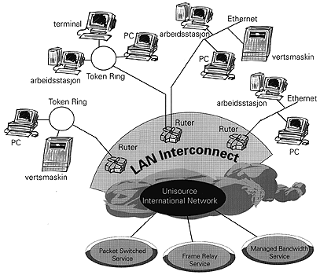

Unidata LAN Interconnect knytter sammen geografisk adskilte lokalnett slik at de utgjør ett felles konsern-nettverk. Dette gir mulighet til å håndtere distribuerte database-applikasjoner, E-mail, EDI, fjern på-logging og en rekke andre applikasjoner. Aktiv styring av data mellom ulike plattformer gjør at tjenesten egner seg ypperlig til å fjernadministrere flere lokale nettverk og samtidig realisere alle-til-alle kommunikasjon. Unidata LAN Interconnect tilbys på Unisource/UniWorld sitt verdensomspennende fleksible og pålitelige nettverk. I tjenesten inngår installasjon, idriftsetting og drift/overvåking av alle tilknytningspunkter, rutere og rutergrensesnitt.
Unidata LAN Interconnect kan leveres i kombinasjon med følgende bærer-tjenester fra Telia:
Karakteristika: |
|
| LAN grensesnitt |
|
| Nettverksprotokoller |
|
| Protokoller for ruting |
|
| WAN TRANSPORT Tilgangshastighet (i kb/s) |
|
| Digital oppringt backup (ISDN, opptil 64 kb/s) |
|
|
YTELSE Kapasitet |
Avhengig av transporttjeneste |
| Tilleggsforsinkelse | Avhengig av transporttjeneste, konfigurasjon av og belastning på nettverket, maks. 10 ms. pr. ruter. |
| Tilgjengelighet | Avhengig av transporttjeneste, 0,05% maks. utilgjengelighet pr.ruter. |
|
BETINGELSER Leveringstid (gj.sn.) |
6 til 12 uker. |
| Kontraktsperiode | 1 til 5 år. |
| Fast prising | Ja |
| Fleksibel fakturering | Ja |
| SERVICE ADMINISTRASJON Totaladministrasjon | Ja |
| Help-desk | 24 timer |
| Lokal brukerstøtte | Avtales |
| SLA rapporter | Ja |
|